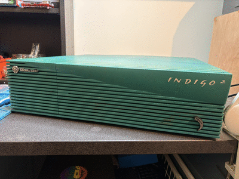
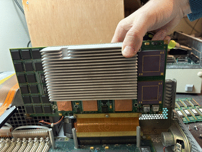
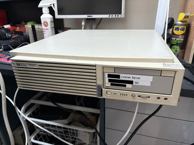
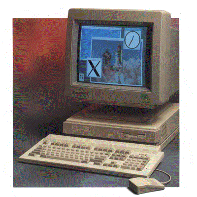
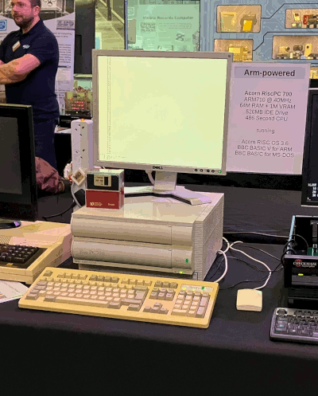

Here are the machines you can (hopefully) see in our little UNIX corner of RetroFest 2025. Apologies if any of these are missing - they are very old and fragile and I fear some might not survive the weekend.
This Silicon Graphics POWER Indigo 2 is a high-end 64-bit single-processor UNIX workstation from 1994.

The Indigo 2 (or Indigo2), launched in 1992, was the replacement for the 1991's Indigo and was Silicon Graphic's mid-range single-processor desktop workstation. It launched with the first mainstream 64-bit processor - the MIPS R4000 - in the distinctive teal coloured case you see here. Later models could be ordered with a MIPS R4400 processor, which had larger caches and higher clockspeeds. These early models came with a choice of three graphics cards:
Video output on all three options is using a 13W3 connector, and so to use a VGA monitor you require an adapter.
The R4400 was OK, but MIPS (which was bought out by Silicon Graphics in 1992) was worried that it was getting beaten by its competition (Alpha, PA-RISC, HyperSPARC, etc), especially in floating point calculations. Their answer to this was the MIPS R8000, launched in June 1994. Despite clocking at only 75 MHz, its wide architecture allowed it to perform up to 300 million floating-point instructions per second (MFLOPS). This CPU was so powerful, SGI claimed that, with the same processor count, an R8000 machine had the same performance as a Cray Y-MP supercomputer from 1988. The price for this performance was steep, although was perhaps very reasonable compared to the price of a Cray. The CPU alone cost $2,5000, never mind the rest of the computer. This is (at least partly) because instead of being a single ceramic package, the CPU is in fact an A5-sized PCB covered in many large (and hot) ICs. It worked though, and by November 1994 (less than six months after launch), 50 of the world's Top 500 fastest computers were SGI POWER Challenge or SGI POWER Onyx servers using the R8000 processor. Looking at the list, the lowest placed POWER Challenge was in position 439 and was a six-processor machine owned by Volvo. As it happened, SGI ended up buying Cray in 1996.
Naturally, computers have moved on somewhat in the last ~30 years, and the R8000 is out-performed (but not outclassed) by the ARM11 CPU you get on a $10 Raspberry Pi Zero.
The Indigo 2 was, for a short time and at an extraordinary price tag, available with a single instance of this the super-computer grade CPU. An R8000-equipped Indigo 2 is known in the marketing material as a "POWER Indigo 2", and that is what we have here. The short life-span of the POWER Indigo 2 was because the MIPS R10K arrived in January 1996, compensating for its lowly two-instructions-per-clock cycle FPU performance by having more than twice the clock speed of the R8000, and at a much lower price point. At about the same time as the R10K came out, the graphics sub-system in the Indigo 2 was upgraded from EXTREME Graphics to IMPACT Graphics, and the case colour was changed from teal to purple to mark this upgrade.

The Centre for Computing History has many things in its archive, but it does not (last I checked) have a POWER Indigo 2. SGI Depot is perhaps the primary on-line resource for SGI spare parts and complete machines, and Ian there tells me he doesn't have a POWER Indigo 2 either. If he did have one to sell you, his price list says it'd cost you £1400. That's a lot, but it's also still a steep discount on the original list price of $75,000.
I have no information about the history of this particular example, other than I acquired it from a lovely person called Kestral who I met on social media.
This POWER Indigo 2 is running IRIX 6.2 from 1996, which is a little bit later than our machine (which would have shipped with IRIX 6.0), but a reasonable in-period upgrade.
This Hewlett Packard Visualize B132L+ (from the 'B-series' family) is a mid-range single-processor 32-bit UNIX workstation, from 1996.

HP launched the HP 9000 series in 1984, and initially used a range of processor architectures, before settling on HP's own PA-RISC architecture. The array of machines in the line-up is dizzying, but broadly there were servers and there were workstations. The HP 9000 Series 700 workstations are perhaps the best known, partly because they also had a port of NeXTSTEP OS. HP gave up on numbers in 1995, and replaced the 700-series workstations with the Visualize B-series, C-series and J-series workstations. B-Series that we have was available at 132 MHz (our example), 160 MHz (the B160L) and 180 MHz (the B180L) variants, with a choice of standard SCSI or high-voltage differential SCSI (you don't want that one). It has integrated 2D graphics, and so it a middling UNIX workstation, rather than a fire-breathing graphics powerhouse. It has six 72-pin SIMM slots and takes ECC RAM.
This example was actually a server for Cable and Wireless and only came out of service recently. The video output has a 'VESA EVC' and the vendor thankfully included a VGA adapter.
It is running HP-UX 10.20 from 1996, which is probably what our machine should have shipped with. HP-UX 10.20 came with both VUE and its replacement CDE. I've elected to install the former, because we've already got a few CDE machines and well, I mean just look at those strakes on the launcher panel!
This HP 9000 Visualize C3000 (from the 'C-series' family) is a high-end single-processor 64-bit UNIX workstation from 1999.

Our C3000 is a later model than the B132L+, sporting a 64-bit PA-8500 processor, a couple of 64-bit/66 MHz PCI slots, and eight non-standard 278-pin DIMM slots that take 120 MHz ECC SDRAM modules. It would have been a direct competitor for our Sun Ultra 80.

This example was actually a server for Virgin Media and only came out of service recently. A 3D graphics card was added by the vendor so I wouldn't be forced to use the serial console.
It is running HP-UX 11.00 from 1996, which is probably what our machine should have shipped with and is the first 64-bit version of HP-UX. HP-UX 11.00 came with only the Common Desktop Environment (CDE).
This Sun Ultra 80 is a high-end 64-bit multi-processor UNIX workstation from 1999.

This is the top of Sun's workstation line-up from the late 1990's, and can take up to four UltraSPARC-II CPU modules. In this machine, we have three (the fourth is not working and has been removed). This model was replaced by the Ultra 45 in 2006 (which was the last SPARC workstation Sun ever made).
Inside, there are 16x 144-pin DIMM slots which take ECC SDRAM. The maximum capacity is 4GB. Unfortunately, half the DIMM slots are on a riser board which is supported on a plastic frame (as are the CPUs) and this plastic is now incredibly prone to cracking. I really hope it surives the journey as that plastic is carrying quite a lot of weight. I much prefer the interior design of the HP Visualize C3000 (which would have been a direct competitor), as that has all-metal construction.

This example is fitted with a 2D graphics card, and the stickers on the case indicate it came from Oxford University Computing Laboratory. I like to think it was used for C programming and maybe some mathematical modelling in MATLAB.
This machine would have shipped with Sun Solaris 7, which was the first 64-bit version of Solaris and is what I have installed. Solaris 7 came with either OpenWindows or the Common Desktop Environment (CDE). It is also supported by Solaris 8, 9 and 10.
This Acorn R260 is an entry-level UNIX workstation from 1991.

This machine is Acorn's 1991 'second generation' UNIX workstation. Based on the ARM3 processor, performance has been boosted by nearly 3 times from the previous R140 introduced in 1988.
Created using the same hardware as Acorn's Archimedes range which ran Acorn's RISC OS, the 'R' range of machines also added an installation of the UNIX, RISC iX. The R260 has the same hardware as the Archimedes A540.
With a retail price of £4995, this was by far the most expensive computer that Acorn had ever produced. Although it cost as much as a small car at the time (and the equivalent of £11300 today) this was a 'budget' UNIX offering, costing perhaps half the price of the (admittedly faster) competition.
Unfortunately this is the last Acorn RISC iX model produced, and future Acorn machines would ship with RISC OS only. In later years Linux and NetBSD were ported to the range, once again providing a UNIX experience on the earliest ARM hardware.
This Acorn RiscPC is an low-end RISC workstation from 1994.

This machine is Acorn's 1994 'third generation' Arm workstation. Try as we might, we haven't been able to get Linux or NetBSD running on it (although it is possible in theory), so here it's running the decidedly not-UNIX RISC OS 3.6. It has an ARM710 CPU running at 40 MHz, which makes it much faster than the Acorn R260, but incredibly slow compared to everything else here. Especially as it does not have a hardware floating-point unit.
The Risc PC was pretty popular in UK schools as an upgrade to the earlier Archimedes line, as it offered good backwards compatibility with earlier RISC OS titles. It could also be fitted with 486 "second processor", allowing it to run MS-DOS and Windows 3.1 or Windows 95 inside a RISC OS window (albeit fairly slowly).
The Risc PC range did see a final upgrade to the 200 MHz Strong ARM processor from Digital (the people who made the Alphastation) in 1996, but it wasn't enough and Acorn left the computer business in 1999. They continued on as Element 14, focussing on the set-top box business right as the UK started to move towards digital TV.
This page is part of the UNIX network we set up at RetroFest 2025. You can read about:
Or you can go back to the index.
(c) Copyright Jonathan 'theJPster' Pallant, and contributors